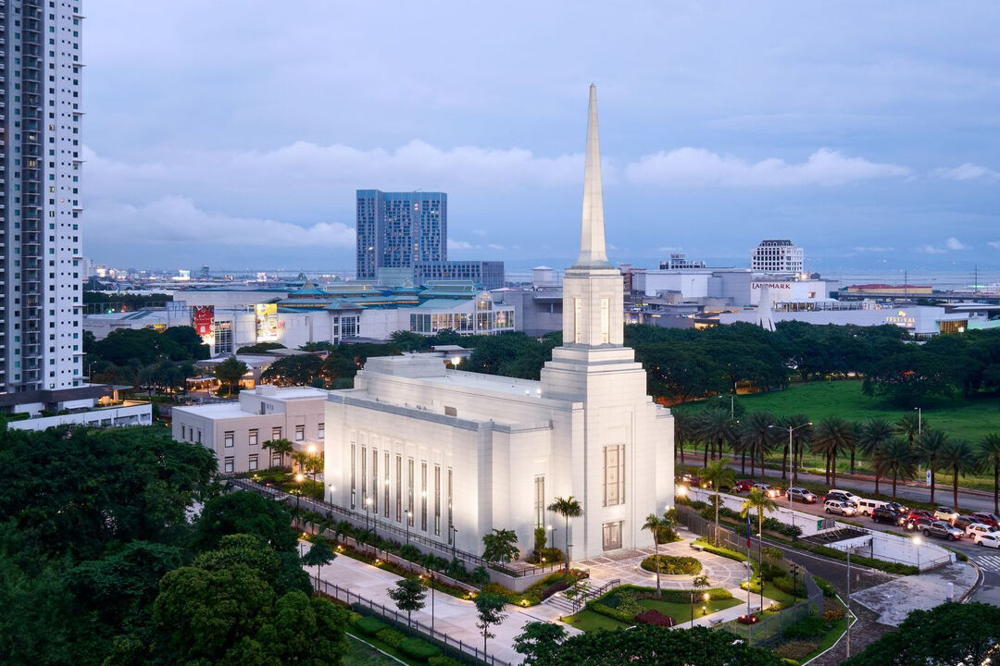
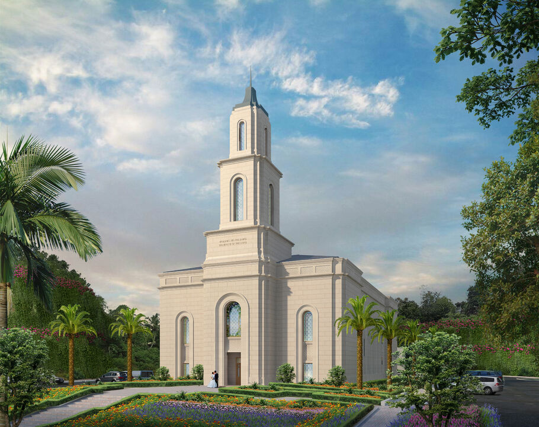
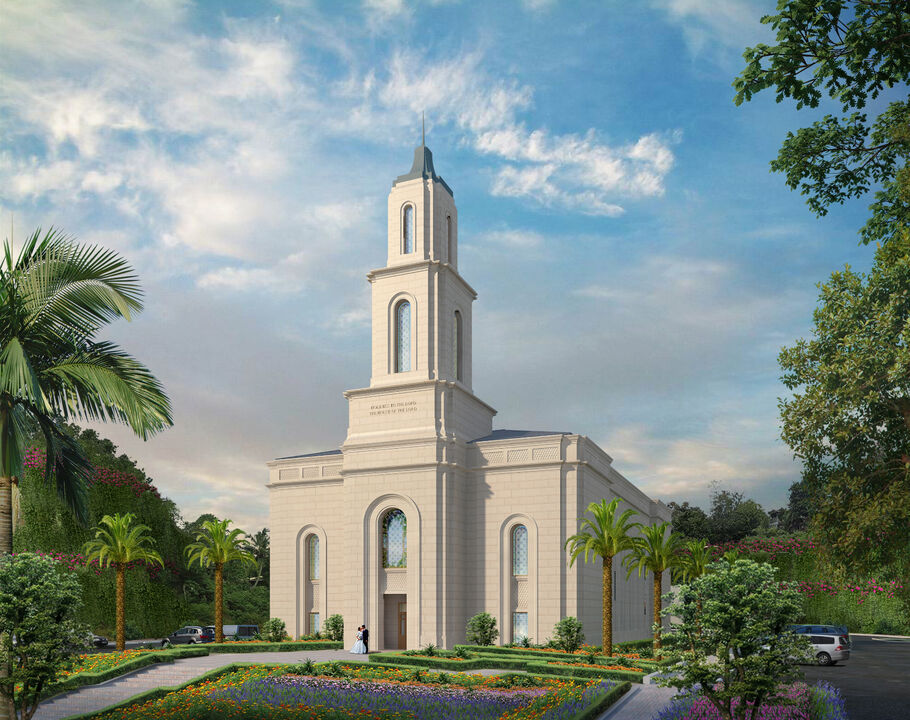
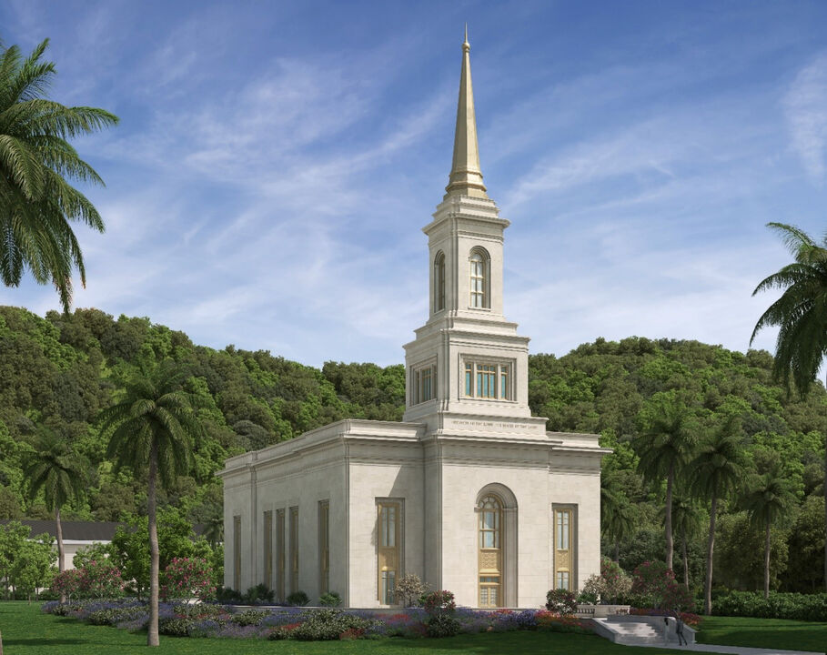
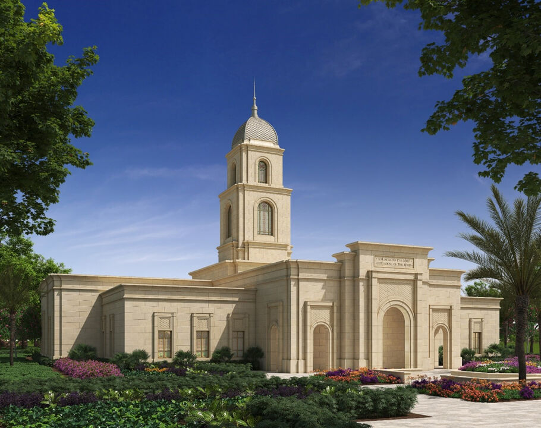
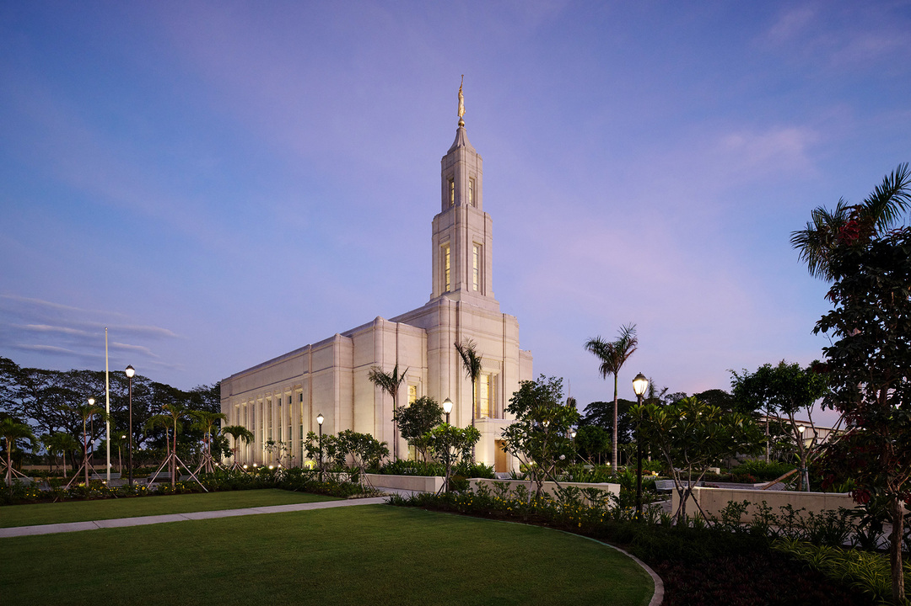
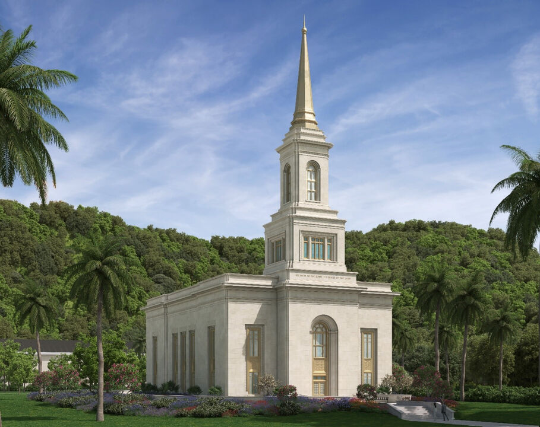
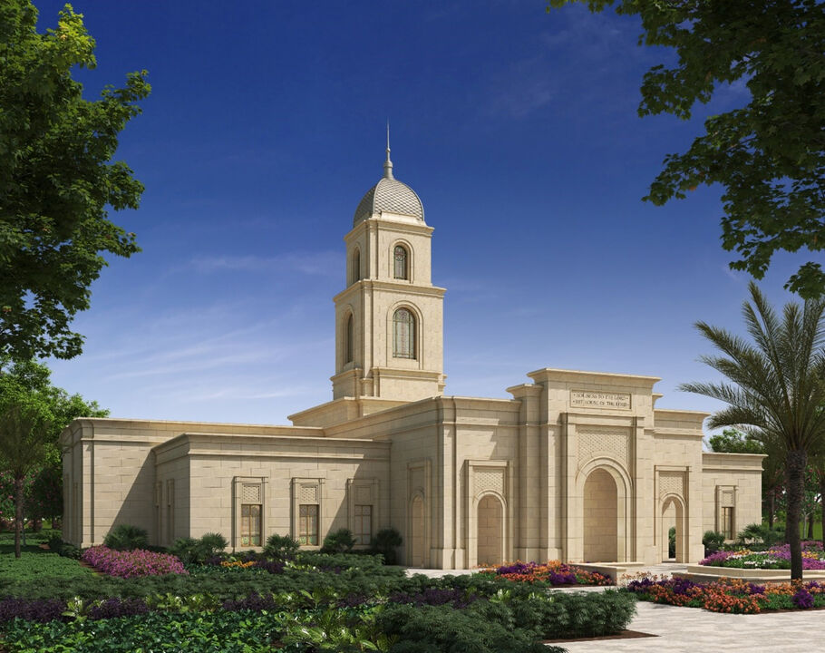
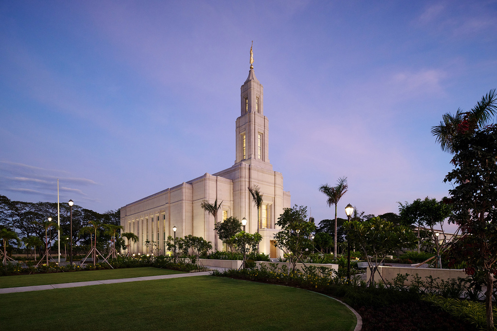

Home

Alabang Philippines Temple
 Bacolod Philippines Temple

Cagayan De Oro Philippines Temple
Bacolod Philippines Temple

Cagayan De Oro Philippines Temple
 Cebu Philippines Temple
Cebu Philippines Temple
 Davao Philippines Temple

Tacloban Philippines Temple

Tuguegarao Philippines Temple

Urdaneta Philippines Temple
Davao Philippines Temple

Tacloban Philippines Temple

Tuguegarao Philippines Temple

Urdaneta Philippines Temple
 Manila Philippines Temple
Manila Philippines Temple